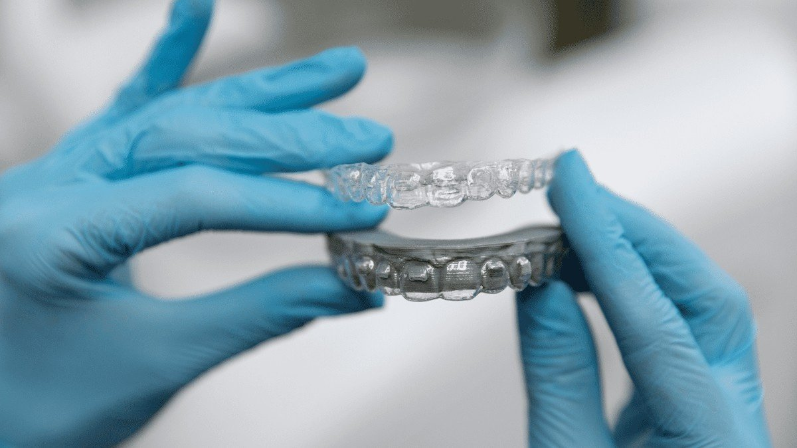
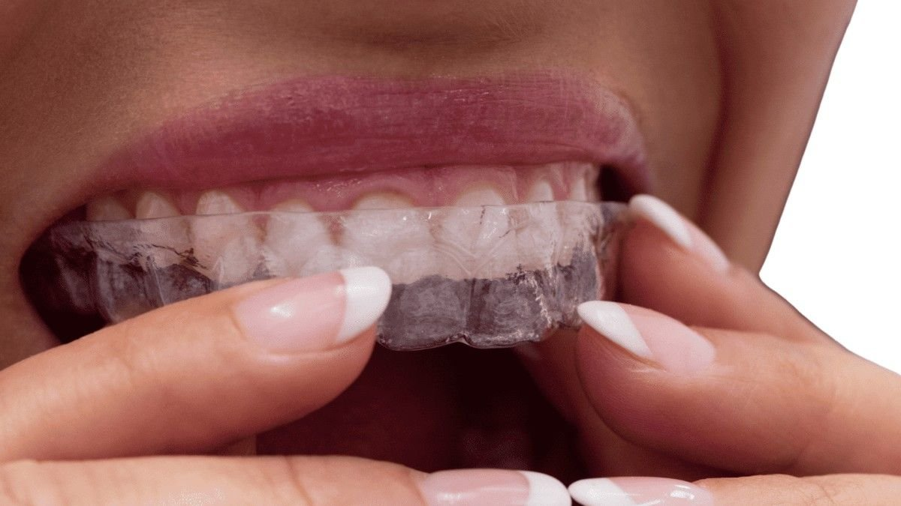

Transform Your Smile with Invisalign : A Guide to Clear Aligners
Diamond Invisalign Provider in Dublin and Tracy, CA, Serving Dublin, Pleasanton, San Ramon, Danville, Livermore, Castro Valley, Tracy, San Leandro, Hayward and Fremont, CA
Diamond Invisalign Provider In Dublin and Tracy, CA
Transform Your Smile with Invisalign: A Guide to Clear Aligners
Straight teeth are more than just a beauty goal. They help with chewing, speaking, and even oral hygiene. But many patients, especially teens, hesitate to get traditional metal braces because of how they look and feel.
At Dante Gonzales Orthodontics, we offer a better way to straighten your teeth: Invisalign braces. Our customized aligners fit correctly and are made of clear plastic, so they’re nearly invisible. Invisalign treatment for teens and adults is one of the most advanced clear aligners to fix orthodontic issues without the discomfort of brackets and wires.
If you're a parent exploring options for your teen or you're ready to start your own Invisalign journey, we’re here to guide you.
Want to know if you’re a candidate for braces or Invisalign?
Take Our 30-Second Quiz Now To Find Out!
Why Choose Invisalign Over Traditional Braces?
Invisalign braces offer several advantages when compared to traditional braces. Here’s why many patients and parents prefer them:
- No metal brackets or wires
- Easily remove Invisalign aligners for meals or brushing
- Fewer orthodontist visits
- Less irritation to gums and cheeks
- Clear plastic aligners are almost invisible
- Easier to clean teeth during treatment
What Are Invisalign Clear Aligners?
Invisalign clear aligners are removable trays made from smooth, BPA-free plastic. Each set is designed to gradually shift your teeth into their correct position. Unlike metal braces, there are no wires, brackets, or rubber bands. Instead, you wear a series of clear plastic aligners that are changed every one to two weeks as part of a customized treatment plan.
Invisalign aligners are created using advanced 3D digital imaging by Align Technology, showcasing innovative align technology that ensures a perfect fit. This means each aligner is made to fit your mouth exactly, providing efficient and controlled tooth movement.
| Feature | Invisalign Clear Aligners | Traditional Metal Braces |
|---|---|---|
| Appearance | Almost invisible | Very visible with metal brackets |
| Comfort | Smooth plastic, no wires | Can irritate cheeks and gums |
| Removability | Can be removed for eating and brushing | Fixed in place |
| Oral Hygiene | Easy to clean teeth | Harder to brush around wires |
| Eating Restrictions | None | Avoid hard and sticky foods |
| Visit Frequency | Fewer checkups | Regular visits to tighten wires |
| Customization | Yes, using digital scan | Limited |
| Emergency Visits | Rare | Common due to broken wires |


Benefits of Invisalign Treatment
Choosing Invisalign treatment brings not just aesthetic benefits, but practical ones too. Here’s why it works so well for teens and adults alike.
-
1. Comfort and Convenience
Invisalign aligners are smooth and gentle on the gums. There are no metal wires poking your mouth or brackets that break. You can remove the aligners while eating or brushing. That means no food restrictions.
-
2. A Discreet Alternative
The aligners are nearly invisible, providing the discretion that many teens desire. Teens, unlike braces, won’t feel self-conscious in school or social situations. Adults don’t have to worry about braces affecting their professional appearance.
-
3. Improved Oral Health
Traditional metal braces can trap food and increase the risk of tooth decay. Since you can remove Invisalign aligners to brush and floss, it’s easier to keep your teeth and gums healthy throughout the orthodontic treatment.
-
4. Predictable Results
Invisalign treatment is based on digital planning to help you effectively straighten your teeth. Your orthodontist can show you how your smile will look even before starting. Each step of the treatment plan is clear.
-
5. Fewer Emergency Visits
Brackets and wires break. Invisalign aligners don’t. This means fewer unexpected visits and a smoother process overall.
-
6. Confidence During Treatment
Invisalign for teens includes compliance indicators, little blue dots that fade when worn correctly. So parents can ensure the aligners are worn as needed. This keeps the treatment on track and builds confidence in teens.
-
7. Suitable for Many Cases
Whether it’s moderate crowding, gaps, or misaligned teeth, Invisalign aligners can handle a wide range of orthodontic problems. With options like Invisalign Express for mild cases or longer plans for more complex ones, we tailor your care.
Who Is a Suitable Candidate for Invisalign?
Invisalign aligners are a great option for both teens and adults who have mild to moderate orthodontic issues. This includes crowded teeth, gaps between teeth, overbites, underbites, crossbites, and moderate malocclusion.
Teens who have lost all their baby teeth and have most of their permanent teeth in place are usually good candidates. Invisalign Teen aligners are specially designed for growing mouths and include features like eruption tabs to accommodate incoming molars.
Adults can also benefit from Invisalign—it's never too late to achieve a straighter smile. We offer Invisalign treatment for patients of all ages, customizing each plan to fit your unique needs.

Our Invisalign Treatment Process
At Dante Gonzales Orthodontics, our Invisalign trained doctor ensures each step is smooth and clear. We start with a digital scan to create a 3D image of your mouth. This helps in building your treatment plan using Align Technology.
Once your customized aligners are ready, you’ll wear each set for 20–22 hours a day. We check your progress every few weeks.
Throughout the Invisalign journey, we monitor tooth movement and adjust the plan if needed.
How Invisalign Works
Invisalign works by applying controlled pressure to move teeth into place. Each aligner set targets specific teeth.
How It Works:
- Aligners are worn 20–22 hours a day
- Each set is worn for 1–2 weeks
- Gradual shifting continues until teeth reach their final position
- Trays are updated regularly based on treatment progress
What to Expect During Treatment
We explain every step before you begin. Here’s what to expect:
- Initial scan and planning using 3D technology
- Custom aligners created to fit your teeth
- Wearing aligners daily except during meals and brushing
- Progress checks every 6–8 weeks with our orthodontist
Treatment is smooth, and most patients adjust to aligners quickly.
Treatment Duration and Results
Treatment times vary depending on the case. On average, Invisalign treatment takes 12 to 18 months. Some minor cases using Invisalign Express may take as little as 6 months.
What Affects Duration:
- Severity of misaligned teeth
- Age and oral health
- How well aligners are worn
- Type of movement required
The final result is a new smile that lasts. Most patients need retainers after treatment to maintain straight teeth.
Start Your Invisalign Journey Today
At Dante Gonzales Orthodontics, we believe a better smile can change more than your teeth. It builds confidence, improves health, and brings lifelong benefits. Invisalign braces offer a modern, simple way to get straighter teeth without the hassle of metal wires.
We’re here to help you make the right decision. Visit us and start your Invisalign journey today.
Frequently Asked Questions (FAQs)
1. What is the cost of Invisalign treatment?
Invisalign treatment cost depends on your case. Prices vary depending on how complex the issue is, how long the treatment takes, and how many aligners you need. Some teens may need Invisalign Express, which is shorter and may cost less. Others might need a longer plan. We offer payment plans and insurance support. These costs are an estimate and may change based on individual treatment plans.
2. Will Invisalign aligners affect my speech?
Most people adjust to Invisalign aligners quickly. At first, you might notice a slight lisp. But this usually disappears after a few days, which can be seen as an average initial par score for comfort. Because the aligners are thin and customized to fit correctly, speech problems are rare. If there’s discomfort, we can check your aligners and make adjustments.
3. Can teens be trusted to wear Invisalign aligners?
Yes, especially with Invisalign teen aligners. They come with a blue wear indicator that fades when used properly. This helps parents track wear time. Plus, the comfort and appearance make it easier for teens to wear them without reminders.
4. How do I clean Invisalign aligners?
You can clean your aligners by brushing them gently with a toothbrush and lukewarm water. Avoid hot water as it can warp the plastic. You can also use special cleaning crystals. Clean aligners prevent tooth decay and keep your oral health strong during treatment.
5. What if I lose an aligner?
If a teen loses an aligner, it’s not the end of the world. Contact us immediately. Sometimes, we’ll recommend moving to the next aligner. Other times, a replacement may be needed. Invisalign Teen includes extra aligners just in case. That’s one reason why parents like this treatment option for teens.
Dr. Gonzales has put together this free report about Invisalign:
5-STAR-RATED ORTHODONTIST IN
DUBLIN & TRACY CALIFORNIA (CA), FOR BRACES & INVISALIGN
-

Dr. Gonzales and his staff are truly outstanding. They have an excellent manner with children, while being extremely competent and professional. I would feel comfortable recommending their services to anyone.
George C
-
We are extremely pleased with Dr. Gonzales and his wonderful staff. He and his staff are patient and understanding and they make my son feel completely at ease. They make every visit stress-free and fun for siblings who have to wait in the waiting room too! *thumbs up* Thank you!!!
Betty W
-
Best orthodontic office in the bay area!!
Colleen R
-
The Smith family loves this office! I am so thankful my kids get to go to Dr Gonzales! Thanks for making us feel so special every time we walk in the door.
Laurie S
-
Dr. Gonzalez and his team always gave excellent service. Staff is very friendly and always made my daughter feel relaxed. She has a beautiful smile. Thank you!
Tammy F